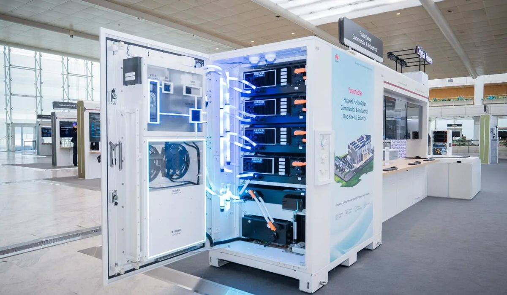

En el panorama productivo y energético actual, las industrias se enfrentan a un doble desafío: la necesidad imperiosa de reducir los costos operativos para mantener la competitividad y la urgencia de garantizar la continuidad de sus procesos ante una red eléctrica cada vez más exigida. La transición energética ya no es solo un compromiso corporativo con la sustentabilidad, sino una estrategia de resiliencia y optimización financiera de primer orden.
Dentro de este escenario, los sistemas BESS (Battery Energy Storage Systems) han surgido como el eslabón clave de la infraestructura eléctrica moderna. Esta guía analiza en detalle, combinando la perspectiva del retorno económico y la viabilidad técnica en planta, cómo la tecnología de almacenamiento de energía de Huawei Digital Power, integrada por Energe, está transformando la gestión energética empresarial.
1. ¿Qué es un Sistema BESS y cómo transforma la infraestructura eléctrica?
Un sistema BESS es una solución tecnológica integral que captura energía proveniente de diversas fuentes —como la red eléctrica pública, parques solares fotovoltaicos o generadores eólicos— y la almacena en bancos de baterías de litio de alta densidad para su posterior liberación controlada en momentos estratégicos.
Su función principal en el ámbito comercial e industrial es desacoplar el momento de la generación o compra de la energía del momento de su consumo real. Esto permite a las empresas pasar de ser consumidores pasivos de electricidad a convertirse en agentes activos capaces de administrar su propia demanda, mitigar riesgos por fallas de suministro y reducir drásticamente el impacto de las tarifas reguladas.
2. Optimización Financiera: Aplicaciones para la Reducción de Costos
La inversión en activos energéticos se justifica mediante la mejora del flujo de caja y la reducción directa del gasto operativo (Opex). Un sistema de almacenamiento impacta positivamente en el balance a través de tres aplicaciones comerciales clave:
Arbitraje Energético (Energy Arbitrage)
Las tarifas eléctricas industriales suelen estar fuertemente segmentadas por franjas horarias (horas pico, valle y resto). El arbitraje energético consiste en programar el sistema BESS para que cargue sus baterías durante las horas "valle", cuando el costo de la energía es sustancialmente más bajo, y descargue esa misma energía para alimentar la planta durante las horas "pico", cuando la tarifa de la red se encarece drásticamente. Esto genera un ahorro automático y predecible mes a mes.
Peak Shaving (Aplanamiento de la Curva de Demanda)
Las empresas industriales pagan costos fijos elevados basados en la potencia máxima contratada. Si durante el arranque de maquinaria pesada o picos de producción la planta supera ese límite por apenas unos minutos, las penalizaciones e indexaciones tarifarias se aplican sobre todo el período de facturación. Un sistema BESS monitorea la demanda en tiempo real: cuando detecta que el consumo se acerca al límite contratado, inyecta energía desde las baterías de forma instantánea, realizando el Peak Shaving (recorte del pico) y manteniendo la demanda registrada bajo control.
Optimización de Activos Solares Fotovoltaicos
Para las plantas que ya cuentan con generación solar, el BESS resuelve el problema de la intermitencia. En lugar de inyectar los excedentes a la red bajo condiciones de recompra desfavorables, la energía limpia generada durante el mediodía se almacena para ser utilizada en los turnos nocturnos de producción, maximizando el autoconsumo industrial y acelerando la amortización de la planta solar.
3. Continuidad Operativa: Seguridad y Calidad de Potencia en Planta
En el entorno productivo, el costo de la energía es tan crítico como la estabilidad del suministro. Un solo microcorte o fluctuación en la tensión puede desprogramar líneas de montaje automatizadas, dañar maquinaria sensible y provocar costosas horas de lucro cesante.
Respaldo Instantáneo (Backup de Alta Velocidad)
A diferencia de los grupos electrógenos diésel tradicionales, que requieren de varios segundos o minutos para encender, entrar en régimen y transferir la carga, un sistema BESS actúa como un sistema de energía ininterrumpida (UPS) a gran escala. Su tiempo de respuesta se mide en milisegundos, lo que garantiza que los variadores de frecuencia, PLCs y sistemas automatizados continúen operando sin interrupciones ante una falla en la red externa.
Mejora en la Calidad de Energía
Las redes de distribución suelen sufrir fluctuaciones de tensión y ruidos eléctricos. Los inversores avanzados de los sistemas BESS filtran estas anomalías, inyectando potencia activa o reactiva según las necesidades del sistema interno de la fábrica, lo que mitiga el desgaste prematuro de los motores y componentes electrónicos de la planta.
4. Análisis Comparativo: Sistemas Centralizados vs. Huawei Smart String ESS
La selección de la arquitectura técnica determina directamente la tasa de disponibilidad del sistema y el costo total de propiedad (TCO) a lo largo de los años. A continuación, se detalla una comparativa técnica fundamental:
| Característica Técnica | Sistemas BESS Tradicionales (Centralizados) | Huawei Smart String ESS (Modular) |
|---|---|---|
| Arquitectura de Conexión | Baterías conectadas en una sola serie masiva. Si una celda falla, todo el contenedor se detiene. | Estructura por cadenas independientes (Smart String). Cada módulo se gestiona de forma aislada. |
| Sistema de Refrigeración | Por aire forzado (Acondicionadores industriales). Genera diferencias de temperatura entre celdas de hasta 10°C. | Refrigeración líquida de alta precisión. Mantiene la diferencia de temperatura entre celdas por debajo de los 3°C. |
| Vida Útil del Banco | Degradación acelerada en puntos calientes ("Hot spots"), reduciendo el ciclo de vida global del equipo. | Degradación homogénea gracias al control térmico líquido, extendiendo la vida útil hasta un 20% más. |
| Mantenimiento y Calibración | Requiere paradas programadas para balanceo manual de voltaje de las celdas. | Optimización automática mediante algoritmos de Inteligencia Artificial en tiempo real, sin detener la operación. |
| Seguridad Activa | Sistemas reactivos de extinción de incendios (actúan cuando el evento térmico ya ocurrió). | Seguridad multicapa con detección temprana por IA, aislamiento eléctrico por módulo y gas extintor integrado. |

5. Características Principales de la Solución de Huawei Digital Power
Huawei ha capitalizado su liderazgo global en electrónica de potencia para diseñar una solución de almacenamiento que resuelve las principales demandas del sector industrial: eficiencia, seguridad y escalabilidad.
- Gestión Inteligente mediante IA (State of Charge - SOC): Los algoritmos integrados calibran permanentemente el estado de carga y salud de cada batería de manera predictiva. El sistema aprende de los patrones de consumo de la planta para determinar con precisión matemática el momento óptimo de carga y descarga.
- Diseño Modular Altamente Escalable: No es necesario realizar una inversión sobredimensionada desde el primer día. Las soluciones de Huawei permiten comenzar con gabinetes comerciales de cientos de kWh y expandirse modularmente a medida que la planta crece o incorpora nuevos turnos de producción, llegando a proyectos Utility-Scale de varios MWh.
- Protección y Seguridad Multicapa: El riesgo de embalamiento térmico está controlado mediante cuatro barreras de protección: protección eléctrica a nivel de celda, sensores de presión y gas para detección ultra-temprana, aislamiento físico por compartimentos modulares y mitigación automatizada de riesgos.
6. Sectores con Mayor Retorno de Inversión y Viabilidad de Implementación
Si bien cualquier gran usuario de energía eléctrica se beneficia del almacenamiento, existen sectores donde la matriz de consumo y la criticidad operativa vuelven la implementación de un sistema BESS una prioridad de corto plazo:
- Industria Manufacturera y Automotriz: Alta dependencia de procesos continuos donde un microcorte genera pérdidas económicas considerables en herramental y horas de reprogramación.
- Petróleo, Gas y Minería: Sitios remotos con redes eléctricas débiles o sistemas aislados (Off-Grid) que dependen del diésel; el BESS permite hibridar el sistema con energía solar y apagar los generadores durante horas.
- Logística y Cadena de Frío: Consumo intensivo y constante de refrigeración las 24 horas, ideal para estrategias combinadas de energía solar y arbitraje de tarifas.
- Centros de Datos e Infraestructura de Salud: Entornos críticos que exigen redundancia absoluta de energía y la eliminación total de los tiempos de conmutación de los respaldos mecánicos.
7. Conclusión: El Camino hacia la Soberanía Energética Industrial
Frente a la inestabilidad de las tarifas y la necesidad global de descarbonizar los procesos productivos, la incorporación de almacenamiento energético ya no representa un costo de innovación, sino una inversión en resiliencia y previsibilidad. Un sistema BESS de Huawei otorga a las organizaciones la capacidad de tomar el control total sobre su suministro eléctrico.